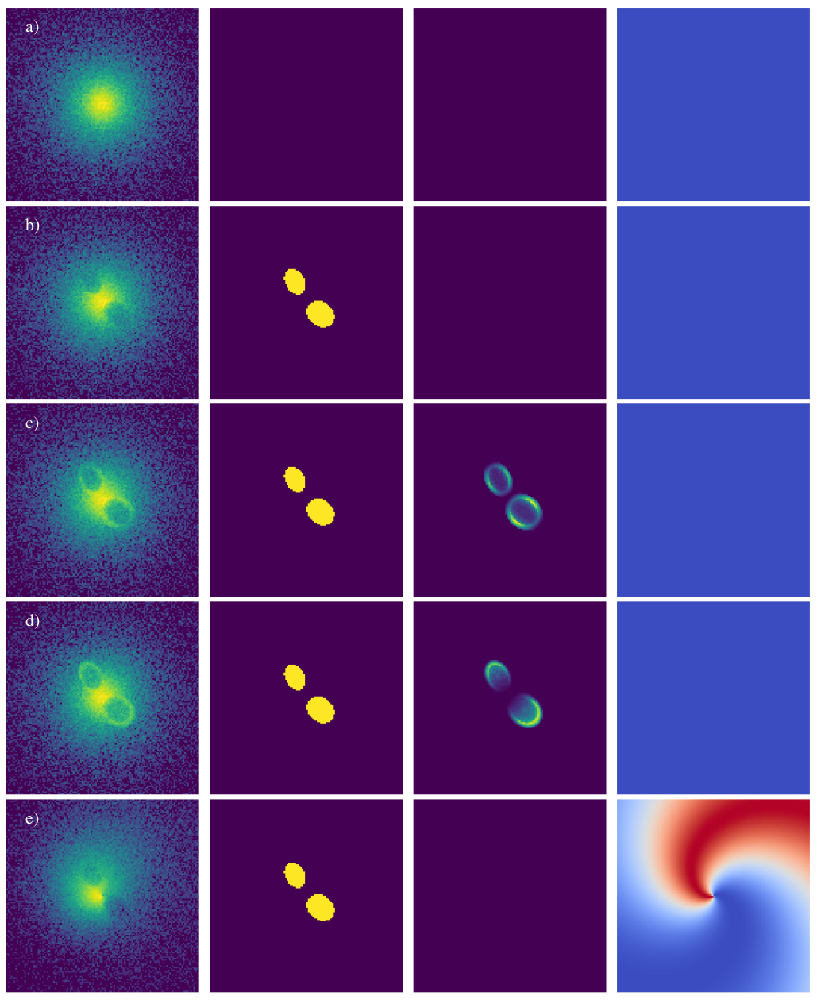
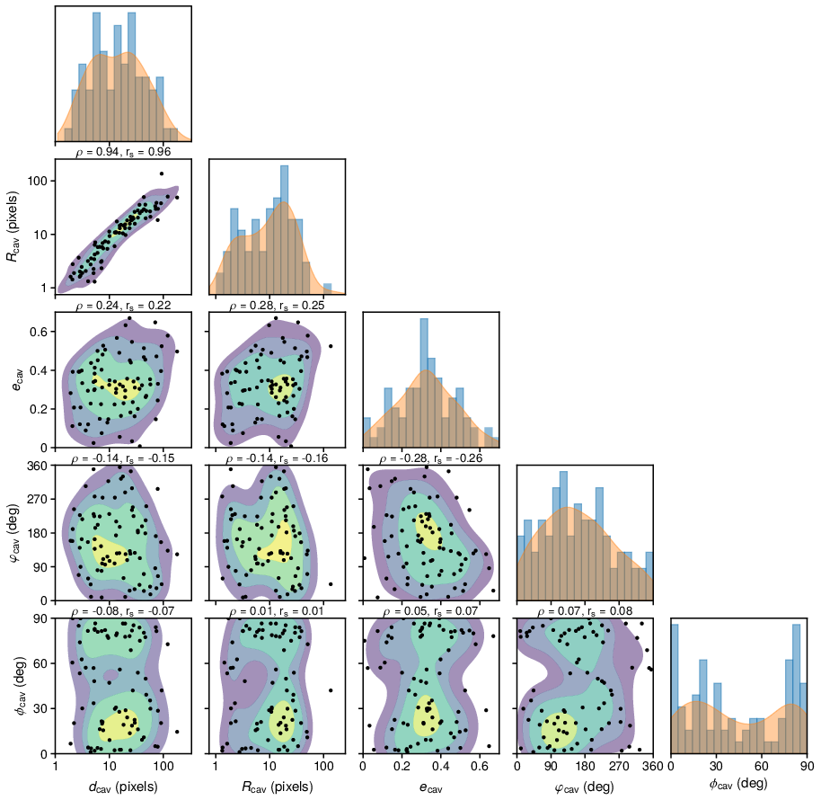
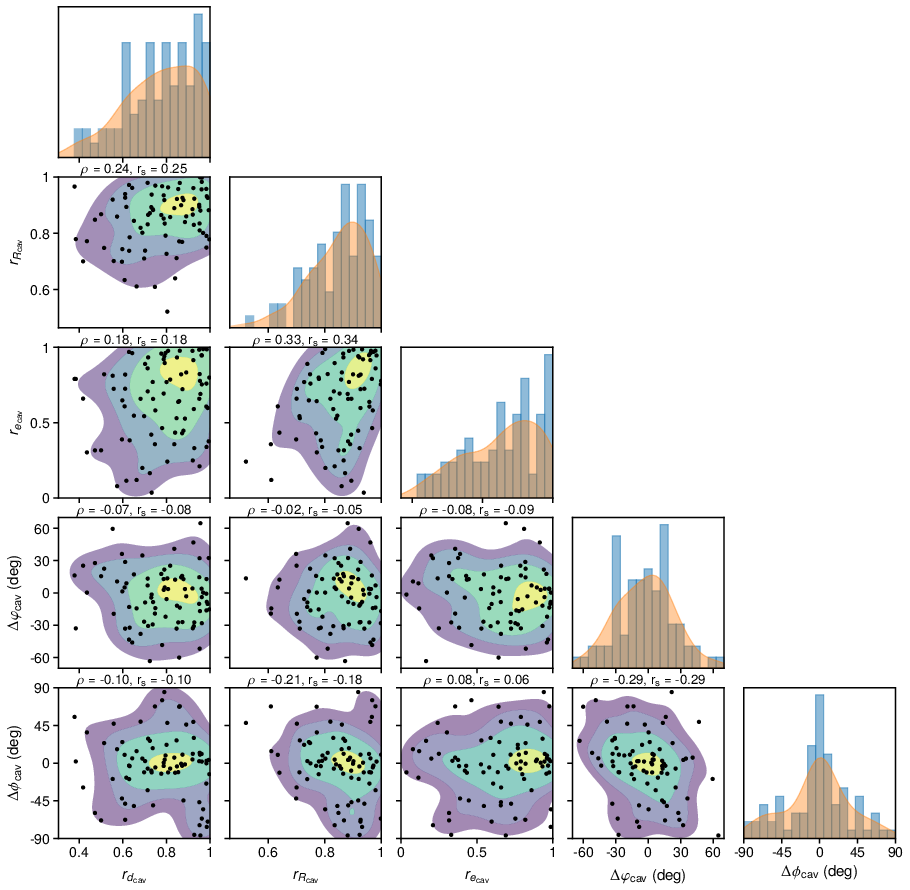

The convolutional neural network was trained on artificial images of simulated galaxies which were
produced by generating spheroidal 3D beta models
[Cavaliere1978]
into which we randomly inserted ellipsoidal cavities. The parameter ranges and
distributions used for generating models of galaxies and X-ray cavities were
estimated from the measurements of a sample of 70 nearby galaxies (for more info see
[Plšek2023]).
Besides X-ray cavities, we added other features such as bright rims around X-ray cavities
and antisymmetric spiral perturbations resembling gas sloshing (see image below) to imitate the gas distribution of real galaxies.
The produced models were summed into 2D images a noised using Poisson statistics to resemble real Chandra-like images.
The corresponding labels were produced similarly by summing ellipsoidal cavity masks
into 2D images and binning them to contain either ones (inside the cavity) and zeros (outside of it).
Elliptical β-models and ellipsoidal cavities were generated with the use of the
JAX library (version 0.2.26).
The training data was created `on the fly` during the training of the network: a mini-batch of images
was generated by the data generator function before each gradient update. Thanks to the GPU support
of the JAX library, training images were generated in a
vectorized way using the same GPU as was used for training of the network. This dramatically improved
the data generation time compared to generating the data using a CPU and also enabled additional
tweaking of the parameters of training images between individual training runs.

Figure 1: Examples of artificially generated images with various features: a) single beta model without cavities, b) beta model with cavities, c) beta model with cavities and type I rims, d) beta model with cavities and type II rims, e) beta model with cavities and gas sloshing. Individual columns show: the resulting noisy image, binary cavity mask, cavity rim pattern, and sloshing pattern.
Parameters of training images
 
")
")